set.seed(123)
n <- 50
x <- runif(n, 0, 10)
beta0 <- -5.1
beta1 <- 0.8
eta <- beta0 + beta1*x
sigma <- 3
y <- rnorm(n, exp(eta), sigma)
par(mar=c(5.1, 5.1, 1.1, 1.1))
plot(x,y,pch=16)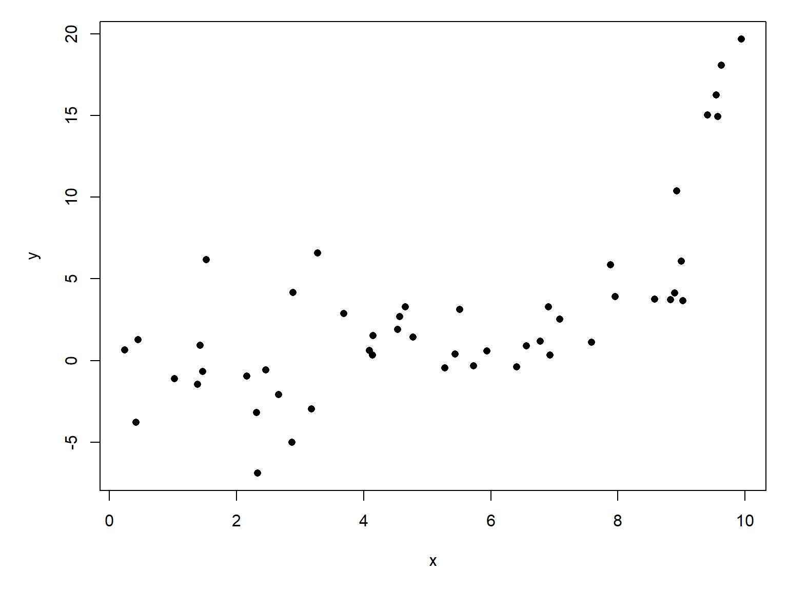
The simplest case of the GLM is the one with a Gaussian response distribution and an identity link function. In state-space notation this is:
\[y\sim Normal\left(E\left(y\right),\sigma_{res}\right)\]
\[E\left(y\right)=\eta\]
\[\eta=\boldsymbol{\beta}\mathbf{X}\]
\[\sigma_{res}>0\]
If that looks familiar, it should. A Gaussian GLM is just another way to say, “ordinary linear regression”. We covered linear regression (and linear models in general) in Section 16.2. Refer to Section 16.3 for exposition and a worked example.
If we add a log link function to the Gaussian GLM, we get a new model:
\[y\sim Normal\left(\mu,\sigma_{res}\right)\]
\[\log{\mu}=\boldsymbol{\beta}\mathbf{X}\]
Just as in linear regression, the response distribution follows a normal distribution, but its expected value \(\mu\) is related to the linear predictors through a log link function. This appears similar to fitting a linear regression on log-transformed \(y\) variable, but it is not the same. The differences are summarized here:
| Property | lm(log(y) ~ x) |
glm(y ~ x, gaussian(link = "log")) |
|---|---|---|
| Response distribution | Lognormal | Normal |
| What is modeled linearly? | \(E[\log(Y)\mid x]\) | \(\log(E[Y\mid x])\) |
| Error variance | Constant on log scale | Constant on original scale |
| Predicted mean on original scale | \(\exp(\eta+\sigma^2/2)\) | \(\exp(\eta)\) |
| Predicted median on original scale | \(\exp(\eta)\) | \(\exp(\eta)\) |
| Possible predicted values | Positive | Positive |
| Possible observed values under model | Positive only | Any real number |
That last row is very important. A log-transformed linear regression (left column) is restricted to positive observed \(y\) values. The Gaussian GLM with a log link function, however, can have observed values that are negative, zero, or positive. It is only the expected value \(\exp(\eta)\) that is constrained to be positive.
Let’s explore the Gaussian GLM with log link by first simulating some data and then analyzing them.
set.seed(123)
n <- 50
x <- runif(n, 0, 10)
beta0 <- -5.1
beta1 <- 0.8
eta <- beta0 + beta1*x
sigma <- 3
y <- rnorm(n, exp(eta), sigma)
par(mar=c(5.1, 5.1, 1.1, 1.1))
plot(x,y,pch=16)
At first glance, these data are a mess! A linear regression is probably inappropriate, because the pattern does not form a straight line. Worse, the variance appears to vary across the domain of \(x\). We would just log-transform these data, but this would require dropping the negative values.
Instead, we apply the Gaussian GLM with log link. This model requires you to supply some starting values for the fitting algorithm. We will supply starting means (mustart, for the \(\mu\) term above).
mod1 <- glm(y~x, family=gaussian(link="log"),
mustart=rep(1,n))and inspect the fitted values:
summary(mod1)
Call:
glm(formula = y ~ x, family = gaussian(link = "log"), mustart = rep(1,
n))
Coefficients:
Estimate Std. Error t value Pr(>|t|)
(Intercept) -7.4178 1.5374 -4.825 1.46e-05 ***
x 1.0554 0.1614 6.540 3.73e-08 ***
---
Signif. codes: 0 '***' 0.001 '**' 0.01 '*' 0.05 '.' 0.1 ' ' 1
(Dispersion parameter for gaussian family taken to be 7.438905)
Null deviance: 1551.89 on 49 degrees of freedom
Residual deviance: 357.13 on 48 degrees of freedom
AIC: 246.2
Number of Fisher Scoring iterations: 12Alternatively, we can try supplying guesses at the model parameters. You can supply these as a simple vector (unlike the start argument in nls()).
mod2 <- glm(y~x, family=gaussian(link="log"),
start=c(-3, 1))
summary(mod2)
Call:
glm(formula = y ~ x, family = gaussian(link = "log"), start = c(-3,
1))
Coefficients:
Estimate Std. Error t value Pr(>|t|)
(Intercept) -7.4177 1.5378 -4.823 1.47e-05 ***
x 1.0554 0.1614 6.538 3.76e-08 ***
---
Signif. codes: 0 '***' 0.001 '**' 0.01 '*' 0.05 '.' 0.1 ' ' 1
(Dispersion parameter for gaussian family taken to be 7.443956)
Null deviance: 1551.89 on 49 degrees of freedom
Residual deviance: 357.13 on 48 degrees of freedom
AIC: 246.2
Number of Fisher Scoring iterations: 9If we are satisfied with that model fit, we can plot the model predictions and their 95% confidence interval (CI).
# x values
px <- seq(min(x), max(x), length=100)
# calculate prediction
pred <- predict(mod2, newdata=data.frame(x=px),
type="link", se.fit=TRUE)
invlink <- mod2$family$linkinv
mn <- invlink(qnorm(0.5, pred$fit, pred$se.fit))
lo <- invlink(qnorm(0.025, pred$fit, pred$se.fit))
up <- invlink(qnorm(0.975, pred$fit, pred$se.fit))par(mar=c(5.1, 5.1, 1.1, 1.1))
plot(x,y,pch=16)
points(px, lo, type="l", lwd=2, lty=2, col="red")
points(px, up, type="l", lwd=2, lty=2, col="red")
points(px, mn, type="l", lwd=2, col="red")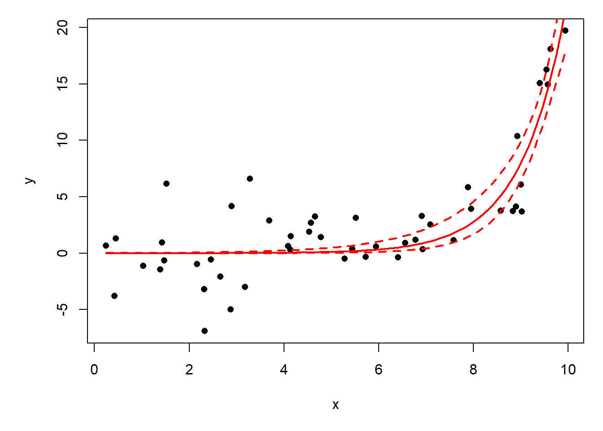
The figure above shows the behavior of the Gaussian log-link model: it constrains the predicted response to be positive, but does not constrain the observations to be positive. It seems like the 95% CI should include negative values, but remember that the CI is a statement of uncertainty about the predicted mean \(\mu\), not about the whole distribution of response values. That would be a prediction interval.
# 95% prediction interval
sigma_hat <- sqrt(summary(mod2)$dispersion)
# Approximate SE of fitted mean on response scale (delta method)
se_mean <- mn * pred$se.fit
lo_pred <- mn - 1.96 * sqrt(sigma_hat^2 + se_mean^2)
up_pred <- mn + 1.96 * sqrt(sigma_hat^2 + se_mean^2)
par(mar=c(5.1, 5.1, 1.1, 1.1))
plot(x,y,pch=16)
points(px, lo, type="l", lwd=2, lty=2, col="red")
points(px, up, type="l", lwd=2, lty=2, col="red")
points(px, mn, type="l", lwd=2, col="red")
points(px, up_pred, type="l", lwd=2, lty=3, col="blue")
points(px, lo_pred, type="l", lwd=2, lty=3, col="blue")
legend("topleft",
legend=c("Confidence interval", "Prediction interval"),
lwd=2, col=c("red", "blue"),
lty=c(2,3), bty="n")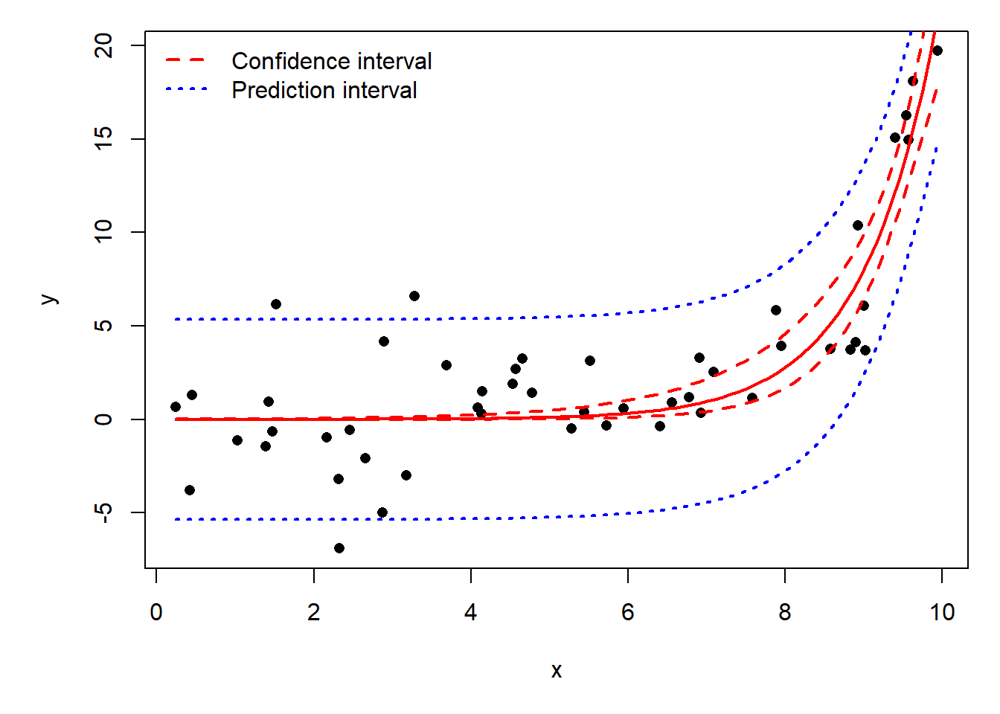
Let’s use the NEON data for a quick example. Download the site-level richness and environmental dataset and put it in your working directory.
dx <- read.csv("dat-neon-site-rich-env.csv")We expect that mean annual temperature (dx$mat) should decrease with latitude, and a scatterplot confirms that:
par(mar=c(5.1, 5.1, 1.1, 1.1))
plot(dx$lat, dx$mat,
xlab=expression(Latitude~(degree*N)),
ylab=expression(Mean~annual~temp~(degree*C)),
pch=16)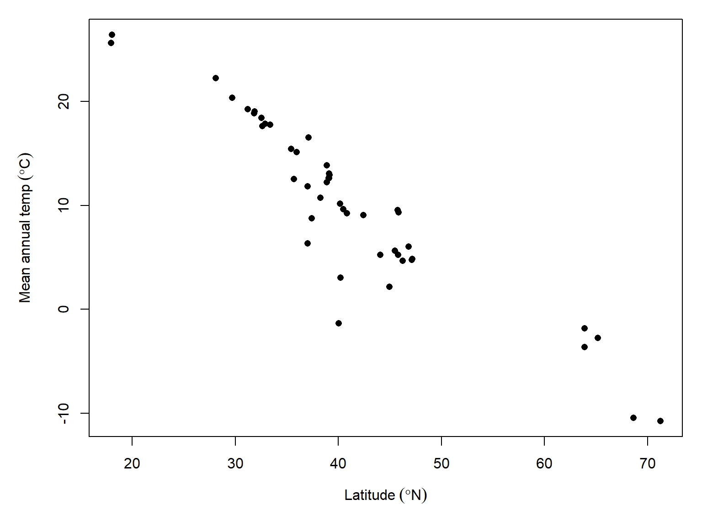
This seems pretty linear, but there might be some heteroscedasticity issues in the middle latitudes. Let’s fit an ordinary linear regression and a Guassian log-link GLM.
mod1 <- lm(mat~lat, data=dx)
mod2 <- glm(mat~lat, data=dx, family=gaussian(link="log"),
start=c(5, -0.05))summary(mod1)
Call:
lm(formula = mat ~ lat, data = dx)
Residuals:
Min 1Q Median 3Q Max
-12.1246 -1.2153 0.4925 2.2915 4.0075
Coefficients:
Estimate Std. Error t value Pr(>|t|)
(Intercept) 38.71669 1.80821 21.41 <2e-16 ***
lat -0.69777 0.04262 -16.37 <2e-16 ***
---
Signif. codes: 0 '***' 0.001 '**' 0.01 '*' 0.05 '.' 0.1 ' ' 1
Residual standard error: 3.196 on 44 degrees of freedom
Multiple R-squared: 0.859, Adjusted R-squared: 0.8558
F-statistic: 268.1 on 1 and 44 DF, p-value: < 2.2e-16summary(mod2)
Call:
glm(formula = mat ~ lat, family = gaussian(link = "log"), data = dx,
start = c(5, -0.05))
Coefficients:
Estimate Std. Error t value Pr(>|t|)
(Intercept) 4.417070 0.189858 23.265 < 2e-16 ***
lat -0.053399 0.005871 -9.096 1.14e-11 ***
---
Signif. codes: 0 '***' 0.001 '**' 0.01 '*' 0.05 '.' 0.1 ' ' 1
(Dispersion parameter for gaussian family taken to be 21.4084)
Null deviance: 3187.12 on 45 degrees of freedom
Residual deviance: 942.03 on 44 degrees of freedom
AIC: 275.43
Number of Fisher Scoring iterations: 7Compare the two model predictions:
px <- seq(min(dx$lat), max(dx$lat))
prx <- data.frame(lat=px)
pred1 <- predict(mod1, newdata=prx, se.fit=TRUE)
pred2 <- predict(mod2, newdata=prx, type="link", se.fit=TRUE)
prx$lo1 <- qnorm(0.025, pred1$fit, pred1$se.fit)
prx$mn1 <- qnorm(0.5, pred1$fit, pred1$se.fit)
prx$up1 <- qnorm(0.975, pred1$fit, pred1$se.fit)
prx$lo2 <- exp(qnorm(0.025, pred2$fit, pred2$se.fit))
prx$mn2 <- exp(qnorm(0.5, pred2$fit, pred2$se.fit))
prx$up2 <- exp(qnorm(0.975, pred2$fit, pred2$se.fit))par(mar=c(5.1, 5.1, 1.1, 1.1))
plot(dx$lat, dx$mat,
xlab=expression(Latitude~(degree*N)),
ylab=expression(Mean~annual~temp~(degree*C)),
pch=16)
points(prx$lat, prx$lo1, type="l", lwd=2, lty=2, col="red")
points(prx$lat, prx$up1, type="l", lwd=2, lty=2, col="red")
points(prx$lat, prx$mn1, type="l", lwd=2, col="red")
points(prx$lat, prx$lo2, type="l", lwd=2, lty=3, col="blue")
points(prx$lat, prx$up2, type="l", lwd=2, lty=3, col="blue")
points(prx$lat, prx$mn2, type="l", lwd=2, col="blue")
legend("topright",
legend=c("LM",
"Gaussian log-link GLM"),
lwd=2, col=c("red", "blue"),
lty=c(2,3), bty="n")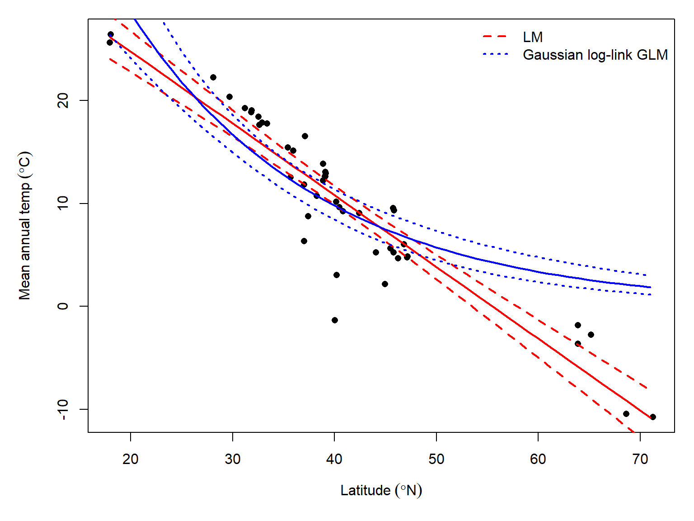
This section explores GLMs for data following a gamma distribution. Gamma-distributed data can show up in two ways in biology: waiting times, or overdispersed continuous data (i.e., data where \(\sigma > \mu\)). The latter case may also be well-modeled by a Gaussian GLM with log-link, but the gamma GLM offers an elegant (and under-utilized) alternative.
Gamma regression is a GLM where response values follow a gamma distribution. The gamma distribution usually describes one of two kinds of data: waiting times until a certain number of events occur, or right-skewed continuous data. The gamma distribution is the continuous analogue of the negative binomial distribution. The figure below shows this:
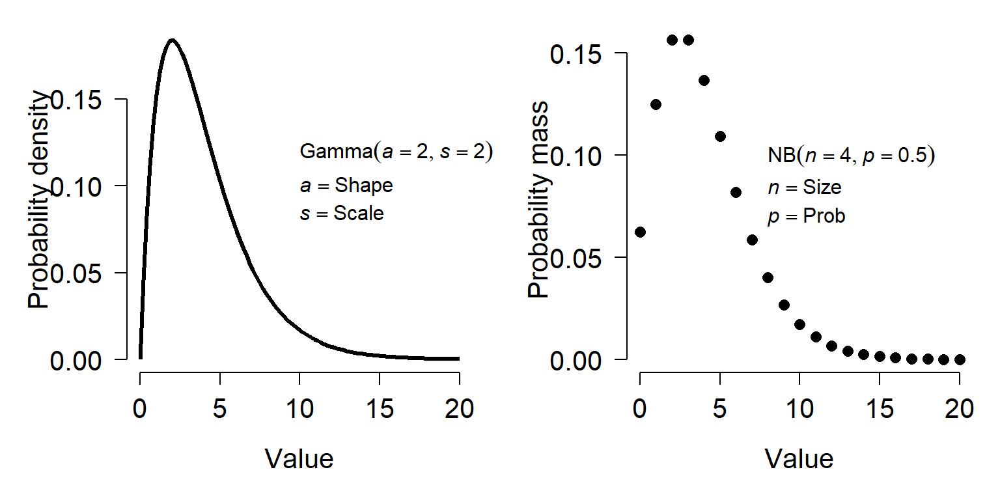
A gamma distribution with shape a and scale s is basically a continuous version of a negative binomial distribution with size n and probability p according to the following relationships:
\[a=\frac{\mu^2}{\sigma^2}\]
\[s=\frac{\mu}{a}\]
Where \(\mu\) and \(\sigma^2\) can be calculated from the parameters of the negative binomial distribution as:
\[\mu=\frac{n\left(1-p\right)}{p}\]
\[\sigma^2=\frac{n\left(1-p\right)}{p^2}\]
The relationships above can be used to convert between gamma distributions and negative binomial distributions with other parameterizations. For example, ecologists often use an alternate version of the negative binomial with mean \(\mu\) and \(\sigma^{2}=\mu + (\mu^{2}/k)\).
Like the negative binomial, biologists can take advantage of the numerical properties of the gamma to model phenomena for which the variance is much greater than the mean. The gamma distribution can only take on nonnegative values, so if you have negative values you may not be able to use it.
As always, we will start with analysis of simulated data. Notice that we are using log link function. The canonical link for the gamma distribution is the reciprocal function (\(f(x)=1/x\)). However, the reciprocal function is more applicable for the “waiting time” interpretation of the distribution. For the “right-skewed non-negative distribution” interpretation, the log or identity links can be appropriate. However, the log-link cannot be used if your data contain 0s.
set.seed(123)
n <- 30
x <- round(runif(n, 0, 4), 1)
# coefficients
beta0 <- 0.9
beta1 <- 1.2
# linear predictor
eta <- beta0 + beta1 * x
# inverse link
y <- exp(eta)
# gamma parameter
shape <- 4
# draw y values (stochastic part)
y <- rgamma(n, rate=shape/y, shape=shape)
# assemble dataset
dat <- data.frame(x=x, y=y)Now, take a look at the data.
plot(x,y)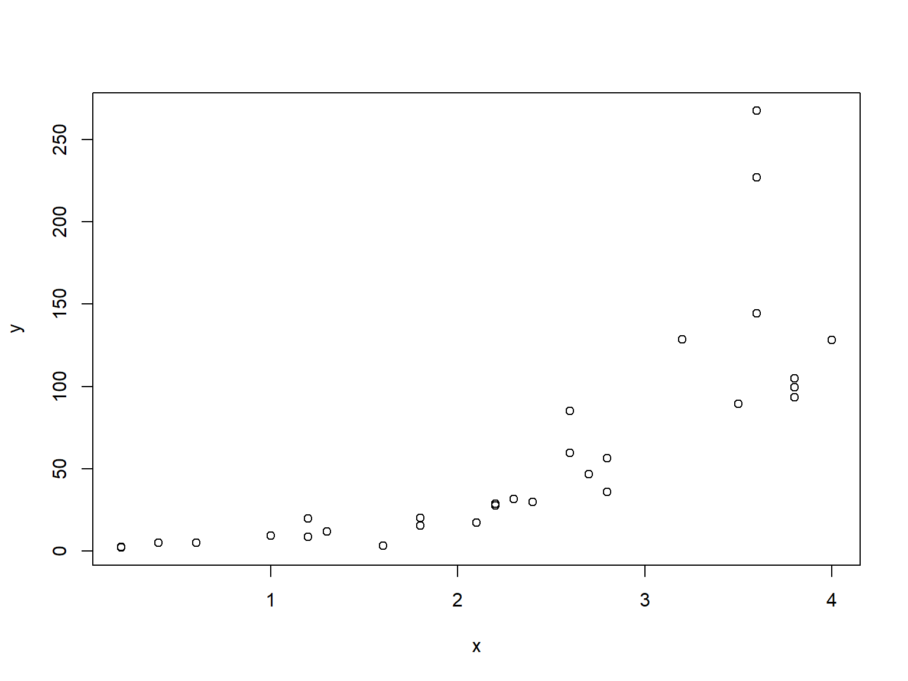
The relationship looks like it might be log-linear—i.e., linear on a logarithmic scale. We can check that with another scatterplot:
plot(x, log(y))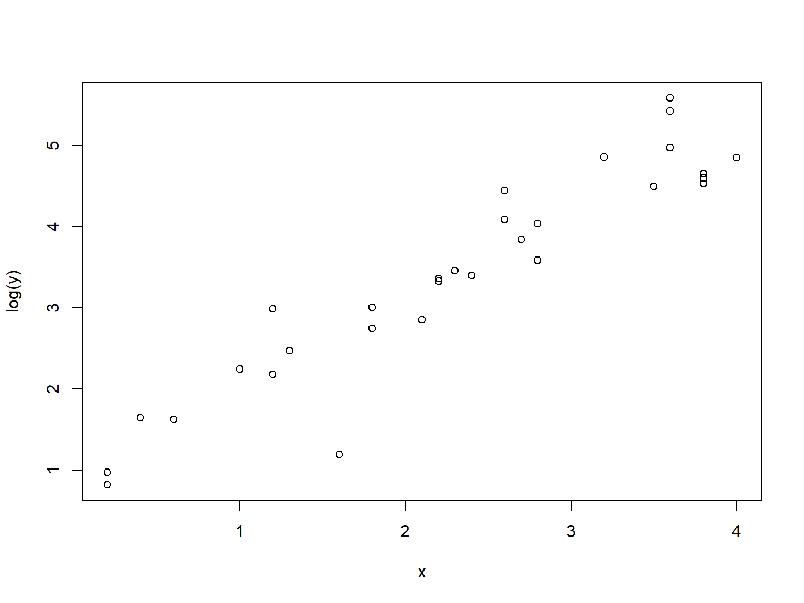
When y is log-transformed, things look linear. We will try a Gaussian GLM with log link function. Because the variance looks like it increases at larger X values, we will also try a gamma GLM. One characteristic of the gamma distribution is that the variance is proportional to the mean squared, which might be the case here.
mod1 <- glm(y~x, data=dat, family=gaussian(link="log"))
summary(mod1)
Call:
glm(formula = y ~ x, family = gaussian(link = "log"), data = dat)
Coefficients:
Estimate Std. Error t value Pr(>|t|)
(Intercept) 1.8969 0.6141 3.089 0.0045 **
x 0.8122 0.1725 4.708 6.16e-05 ***
---
Signif. codes: 0 '***' 0.001 '**' 0.01 '*' 0.05 '.' 0.1 ' ' 1
(Dispersion parameter for gaussian family taken to be 1650.88)
Null deviance: 128445 on 29 degrees of freedom
Residual deviance: 46225 on 28 degrees of freedom
AIC: 311.34
Number of Fisher Scoring iterations: 6mod2 <- glm(y~x, data=dat, family=Gamma(link="log"))
summary(mod2)
Call:
glm(formula = y ~ x, family = Gamma(link = "log"), data = dat)
Coefficients:
Estimate Std. Error t value Pr(>|t|)
(Intercept) 0.99844 0.17787 5.613 5.21e-06 ***
x 1.08949 0.06932 15.717 2.02e-15 ***
---
Signif. codes: 0 '***' 0.001 '**' 0.01 '*' 0.05 '.' 0.1 ' ' 1
(Dispersion parameter for Gamma family taken to be 0.1887889)
Null deviance: 41.3449 on 29 degrees of freedom
Residual deviance: 5.4667 on 28 degrees of freedom
AIC: 245.54
Number of Fisher Scoring iterations: 4Notice that the parameter estimates from the gamma GLM were much closer to “reality” than those of the Gaussian GLM. Which model performed better? The pseudo-R2 suggests the gamma:
1-mod1$deviance/mod1$null.deviance[1] 0.64012171-mod2$deviance/mod2$null.deviance[1] 0.8677773The best test is to plot the predicted values against the actual values and compare the models.
# values for prediction
use.n <- 50
px <- seq(min(x), max(x), length=use.n)
# calculate predictions and CI
pred1 <- predict(mod1, newdata=data.frame(x=px),
type="link", se.fit=TRUE)
mn1 <- pred1$fit
lo1 <- qnorm(0.025, mn1, pred1$se.fit)
up1 <- qnorm(0.975, mn1, pred1$se.fit)
# inverse link function
mn1 <- mod1$family$linkinv(mn1)
lo1 <- mod1$family$linkinv(lo1)
up1 <- mod1$family$linkinv(up1)
# calculate predictions and CI for gamma model
pred2 <- predict(mod2, newdata=data.frame(x=px),
type="link", se.fit=TRUE)
mn2 <- pred1$fit
lo2 <- qnorm(0.025, mn2, pred2$se.fit)
up2 <- qnorm(0.975, mn2, pred2$se.fit)
# inverse link function
mn2 <- mod1$family$linkinv(mn2)
lo2 <- mod1$family$linkinv(lo2)
up2 <- mod1$family$linkinv(up2)
# make plot
par(mfrow=c(1,2))
plot(x,y, main="Normal GLM")
polygon(x=c(px, rev(px)), y=c(lo1, rev(up1)),
border=NA, col="grey80")
points(px, mn1, type="l", lwd=3)
points(x, y)
plot(x,y, main="Gamma GLM")
polygon(x=c(px, rev(px)), y=c(lo2, rev(up2)),
border=NA, col="grey80")
points(px, mn2, type="l", lwd=3)
points(x, y)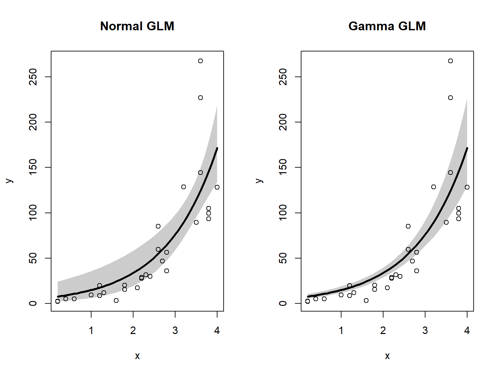
The gamma GLM captured the heteroscedasticity in the data (non-constant variance) better than the Gaussian (normal) GLM. We should conclude that the gamma GLM better represents the data. If you have a heteroscedastic relationship that isn’t well-modeled by other GLMs, the gamma GLM might be worth a try.
Returning to the NEON data, consider this plot of net primary productivity vs. latitude. If you don’t already have it, download the site-level richness and environmental dataset and put it in your working directory.
par(mar=c(5.1, 5.1, 1.1, 1.1))
plot(dx$lat, dx$npp,
xlab=expression(Latitude~(degree*N)),
ylab=expression(g~C~m^{-2}~yr^{-1}))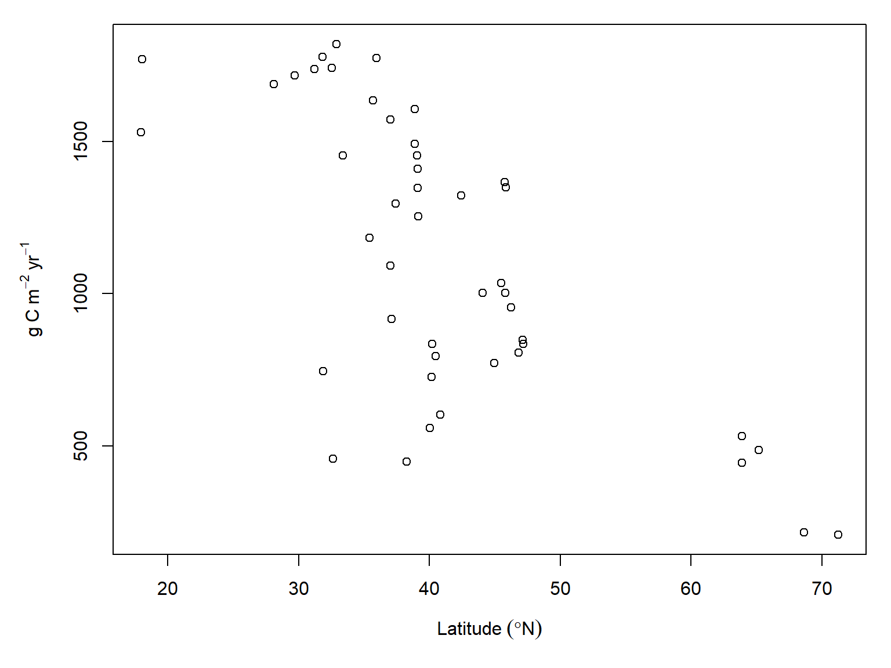
There is clearly a negative trend, but a linear model might be inappropriate because of how much variance there is around the middle latitudes. This is a sampling bias: most NEON sites are in the continental US, which is largely between 30 and 50 degrees north latitude. Still, the heteroscedasticity is there and need to account for it. Let’s try a gamma GLM.
mod3 <- glm(npp~lat, data=dx, family=Gamma(link="log"))
summary(mod3)
Call:
glm(formula = npp ~ lat, family = Gamma(link = "log"), data = dx)
Coefficients:
Estimate Std. Error t value Pr(>|t|)
(Intercept) 8.445877 0.174237 48.473 < 2e-16 ***
lat -0.036232 0.004107 -8.823 2.74e-11 ***
---
Signif. codes: 0 '***' 0.001 '**' 0.01 '*' 0.05 '.' 0.1 ' ' 1
(Dispersion parameter for Gamma family taken to be 0.09483091)
Null deviance: 10.8370 on 45 degrees of freedom
Residual deviance: 5.2205 on 44 degrees of freedom
AIC: 672.57
Number of Fisher Scoring iterations: 5The pseudo-\(R^2\) is encouraging:
1-mod3$deviance/mod3$null.deviance[1] 0.5182766Let’s check the model predictions:
# values for prediction
use.n <- 50
px <- seq(min(dx$lat), max(dx$lat), length=use.n)
# calculate predictions and CI
pred <- predict(mod3, newdata=data.frame(lat=px),
type="link", se.fit=TRUE)
mn <- qnorm(0.5, pred$fit, pred$se.fit)
lo <- qnorm(0.025, pred$fit, pred$se.fit)
up <- qnorm(0.975, pred$fit, pred$se.fit)
# inverse link function
mn <- mod3$family$linkinv(mn)
lo <- mod3$family$linkinv(lo)
up <- mod3$family$linkinv(up)
# make plot
par(mar=c(5.1, 5.1, 1.1, 1.1))
plot(dx$lat, dx$npp,
xlab=expression(Latitude~(degree*N)),
ylab=expression(NPP~(g~C~m^{-2}~yr^{-1})),
ylim=c(0, 3000))
polygon(x=c(px, rev(px)),
y=c(lo, rev(up)),
border=NA, col="grey80")
points(px, mn, type="l", lwd=3)
points(dx$lat, dx$npp, pch=16)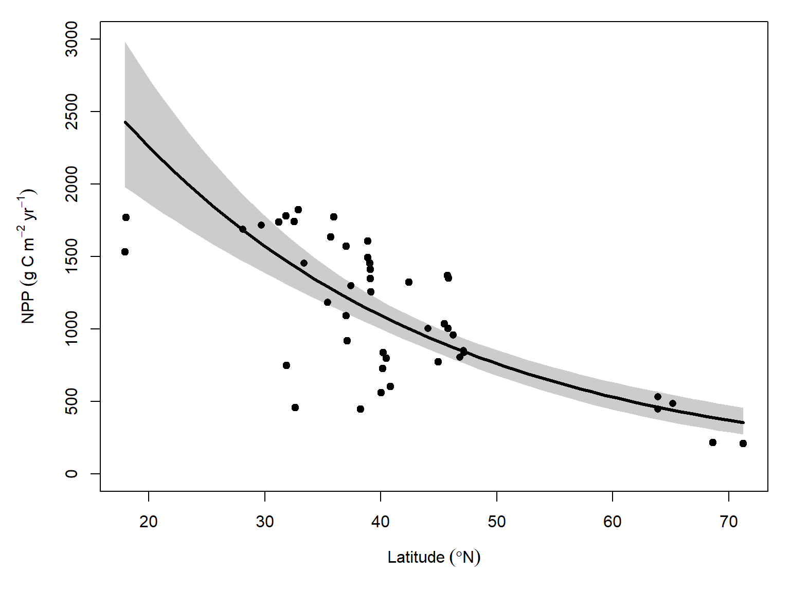
Compare the gamma GLM fit to a Gaussian log-link GLM:
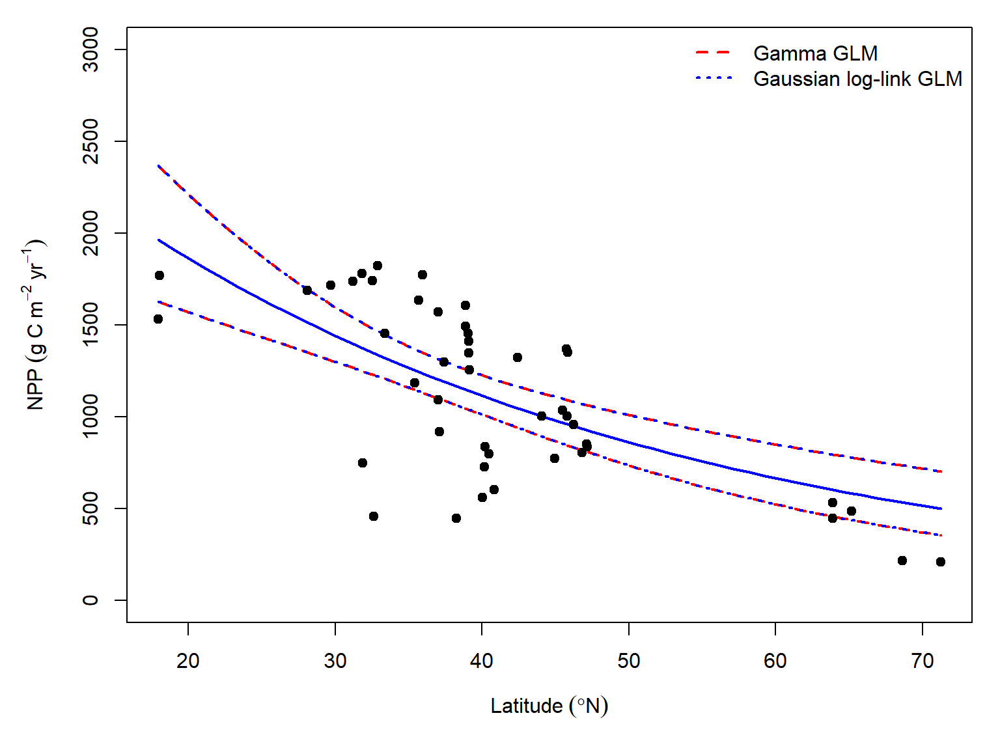